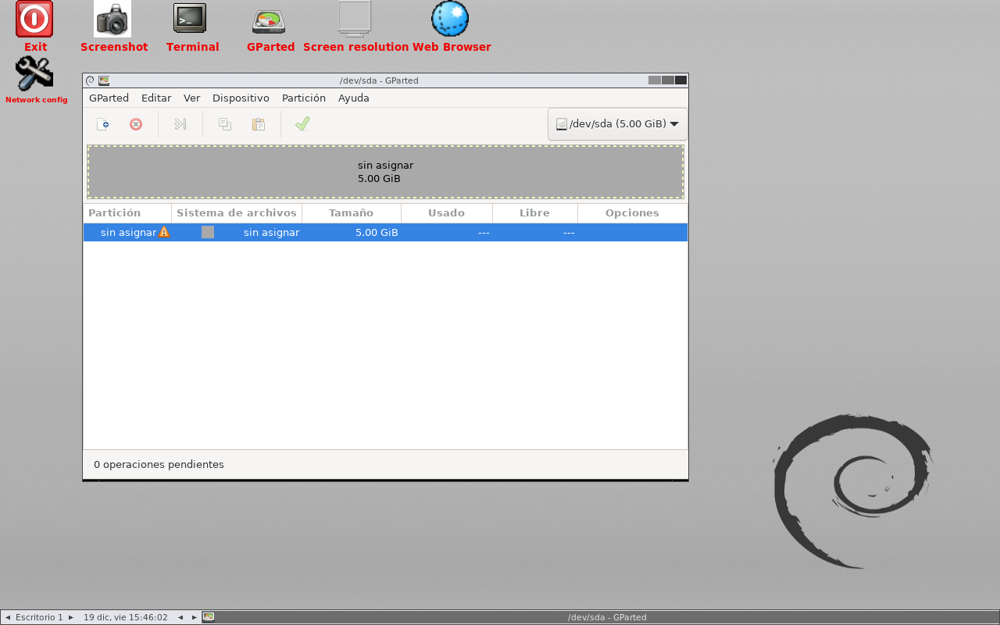
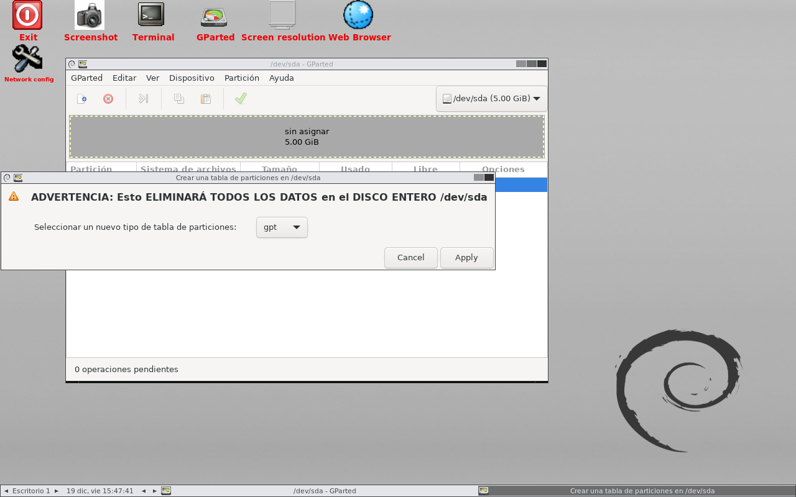
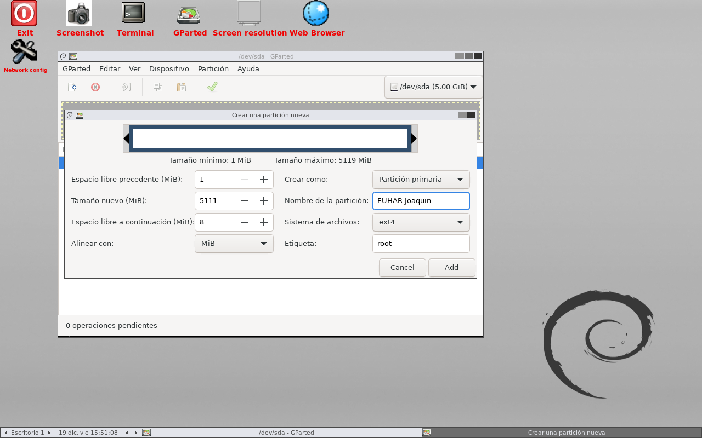
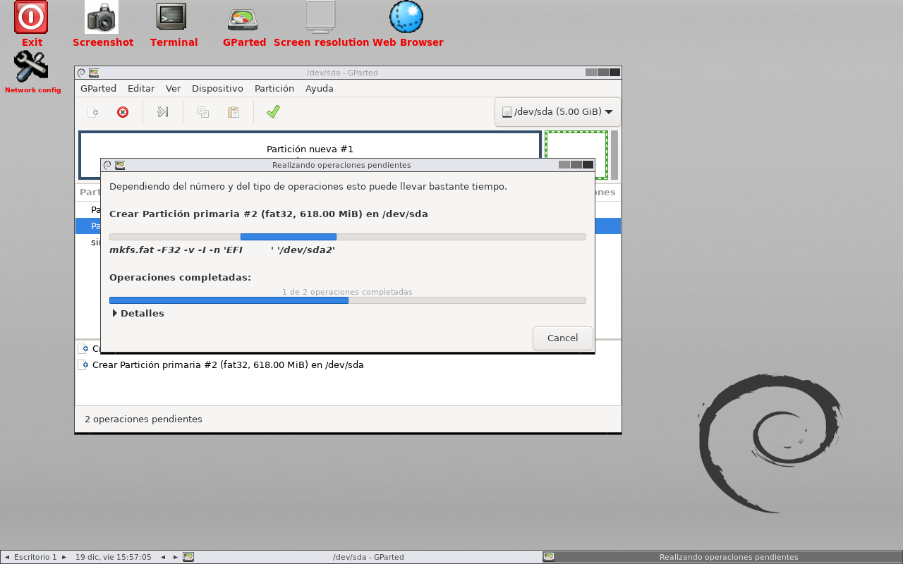
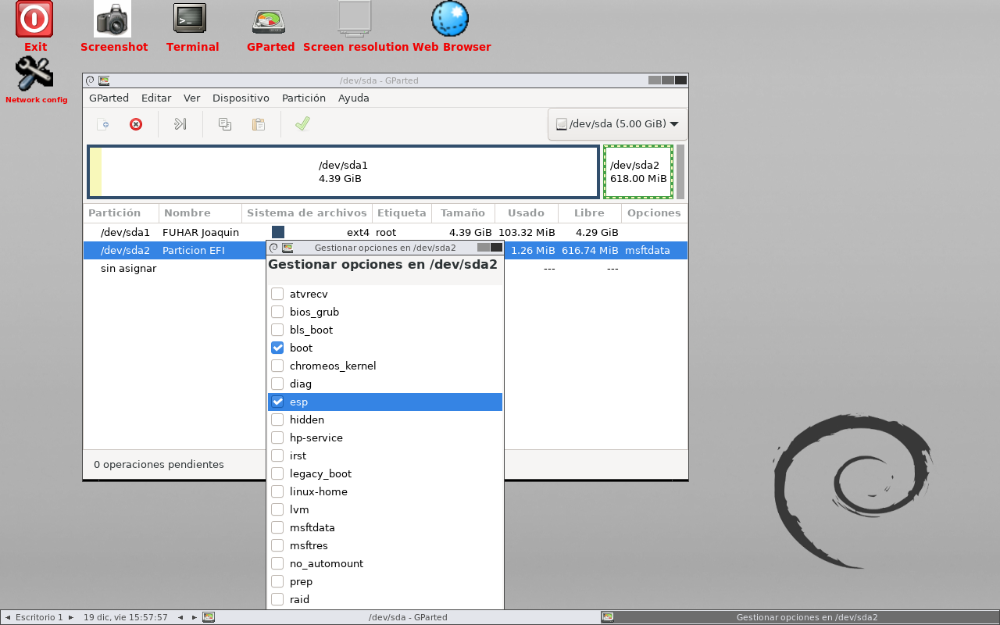
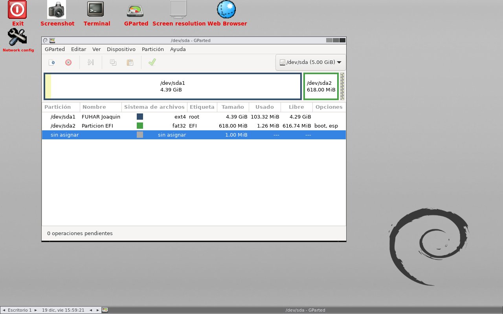

Disco sin tabla de particiones
Una vez arrancado en una máquina virtual, esta captura muestra el disco duro seleccionado, aún sin ninguna tabla de particiones.

En esta sección se presentan herramientas que pueden utilizarse desde entornos de arranque o mantenimiento, orientadas al diagnóstico del hardware y la gestión de particiones.
MemTest86 es un programa muy útil que permite realizar un análisis exhaustivo de la memoria RAM.
En este caso, se realizó la prueba de memoria con anterioridad ya que se estaban sufriendo congelaciones extrañas en el ordenador. Por lo que se usó este test para conocer si el problema estaba en la RAM. Finalmente, no era problema de la RAM, sino una incompatibilidad con el programa Armoury Crate de Asus. Al desinstalarlo, las congelaciones desaparecieron por completo.
Los resultados tras el test indican cero errores durante las cuatro pasadas que realizó en aproximadamente 5 horas, todo ello a una velocidad de 3600 MT/s y con unas temperaturas que oscilaron entre 38 y 49 grados.
Conclusión
La prueba permitió descartar un fallo físico en la memoria RAM y orientar el diagnóstico hacia un problema de software. En este caso, la causa real estaba en la incompatibilidad con Armoury Crate. En este enlace se comparten los resultados
GParted es una herramienta muy útil para gestionar particiones desde un entorno de arranque. Permite crear, eliminar, redimensionar, mover y revisar particiones de forma visual y bastante intuitiva.
Importante
Antes de realizar cualquier cambio en las particiones, conviene hacer una copia de seguridad de los datos importantes. Una modificación incorrecta puede provocar pérdida de información o impedir el arranque del sistema.
Una vez arrancado en una máquina virtual, esta captura muestra el disco duro seleccionado, aún sin ninguna tabla de particiones.

Para ello, creamos la tabla de particiones utilizando el esquema GPT.

Esta captura muestra los valores otorgados durante la creación de la tabla.

Momento en el que GParted está trabajando para crear la tabla de particiones.

En esta captura se configura la partición EFI, activando los flags boot y esp, dejando así la partición FAT32 preparada como EFI System Partition para un sistema UEFI con tabla GPT.

Captura final. A modo de resumen, se utilizó GParted en una máquina virtual de VirtualBox configurada en modo UEFI. Luego, se creó una tabla de particiones GPT sobre el disco virtual /dev/sda. Posteriormente, se creó una partición Linux ext4 para el sistema y una partición EFI en FAT32, marcada con los flags boot y esp. Con ello se dejó el disco correctamente preparado para un sistema con arranque UEFI.
